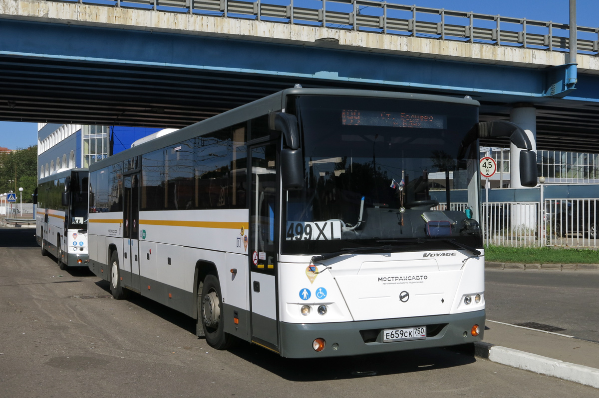

Главная
Добро пожаловать на официальный сайт социального пригородного маршрута Московской области - №499!
Социальный маршрут, связывающий микрорайон "Юбилейный" города Королев, был запущен 01.01.2016 года по решению администрации города, а так же по обоюдному соглашению с ГУП МО "Мострансавто", всвязи с многочисленными просьбами жителей микрорайона Юбилейный и п.Первомайский (Болшево). Теперь местные жители, без труда могут добраться до Москвы без пересадок. Конечная остановка -станция метро ВДНХ.
Обслуживает данный маршрут Королёвское ПАТП.